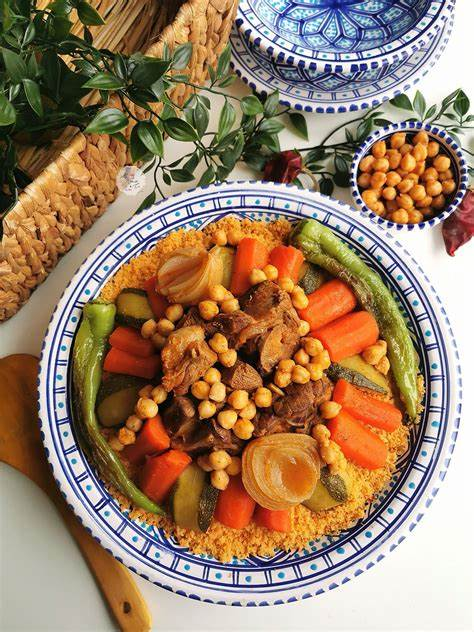
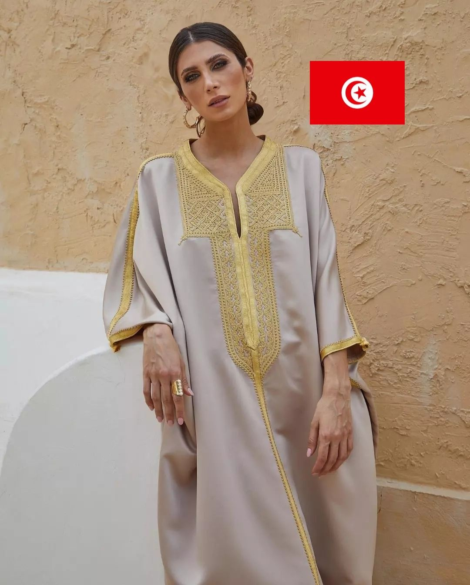

Brik
Crispy fried pastry with egg and tuna.

Couscous
Tunisia’s national dish.

Lablabi
Warm chickpea soup.

Ojja
Spicy tomato stew with merguez.

Kaak Warka
Delicate almond pastry.

Bambalouni
Sweet fried dough.

Mesfouf
Sweet couscous with raisins.

Makroudh
Date‑filled semolina pastry.

Harissa
Spicy chili paste.

Salata Mechouia
Grilled pepper salad.

Merguez
Spicy lamb sausages.

Zwitina
Olive oil dip with spices.
Malouf Music
A classical musical tradition brought to Tunisia by Andalusian Muslims in the 15th century. Performed with lutes, violins, and percussion at weddings and celebrations.
Stambeli Ritual
A spiritual music and dance tradition of sub-Saharan origin, used in healing ceremonies. Recognised by UNESCO as an Intangible Cultural Heritage of humanity.
Ramadan Nights
During Ramadan, Tunisian cities come alive after sunset with lanterns, music, street food, and families gathering in public squares. A truly magical atmosphere.
Tunisian Wedding
Traditional weddings are elaborate multi-day celebrations featuring henna ceremonies, traditional music, elaborate costumes, and feasts of couscous and sweets.
The Fantasia
A traditional equestrian display where riders in traditional dress charge at full gallop and fire rifles simultaneously — a breathtaking cultural performance.
Berber Heritage
Tunisia’s indigenous Amazigh (Berber) culture survives in the south — in architecture, tattooing traditions, weaving patterns, and the Tamazight language.
Pottery & Ceramics
Nabeul’s hand‑painted tiles.
Carpet Weaving
Kairouan’s geometric carpets.
Silver Jewellery
Khamsa & fish motifs.
Woodwork
Inlaid cedar & olive wood.
Traditional Clothing
Jebba, chechia, fouta.
Olive Oil Heritage
Ancient groves & craft oil.

Sefsari
Elegant white wrap.

Jebba
Traditional embroidered outfit.

Chechia
Iconic red wool hat.

Fouta
Striped wrap cloth.

Klila
Traditional jewelry.

Khomsa
Hand of Fatima symbol.

Balgha
Leather slippers.

Kswa
Wedding ceremonial dress.

Kaftan
Elegant embroidered robe.

Houll
Traditional men’s wrap.

Serwel
Loose traditional pants.

Arfia
Decorated headscarf.